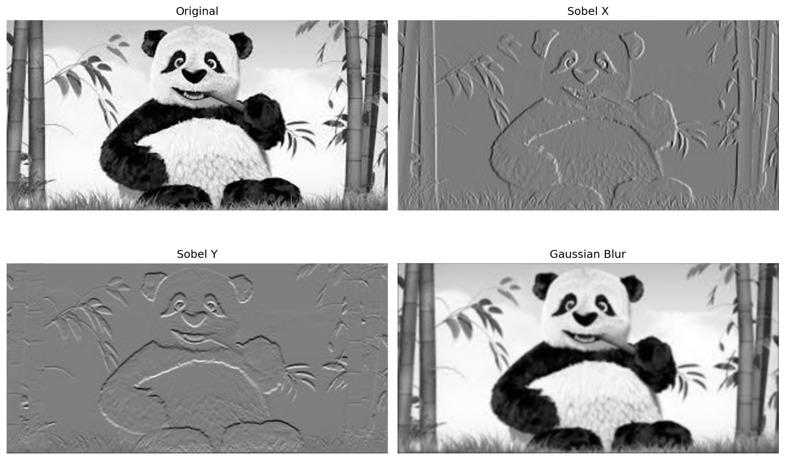
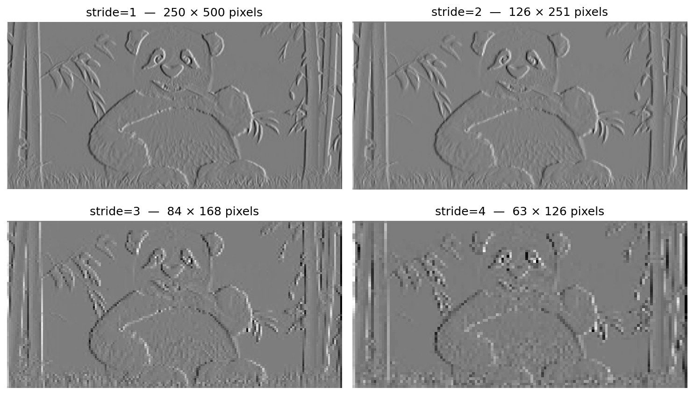
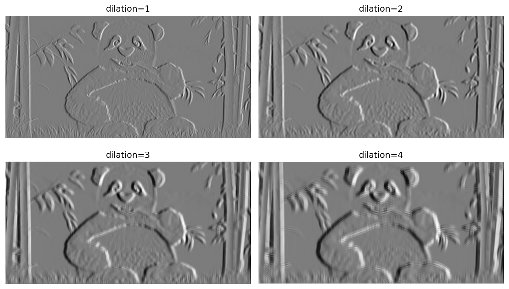
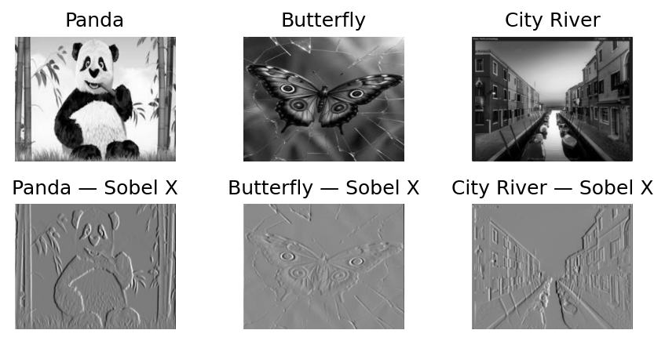
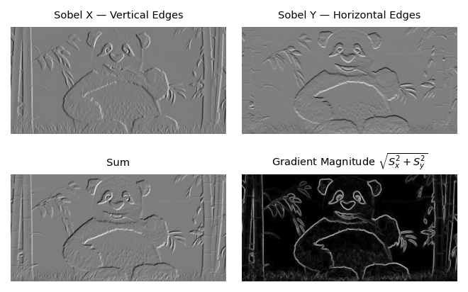

# RGB image: shape (3, height, width)
rgb = torch.zeros(3, 6, 6)
print("RGB image shape:", rgb.shape)
# channel 0 = red, channel 1 = green, channel 2 = blueRGB image shape: torch.Size([3, 6, 6])Introduction to Machine Learning
A convolution is a linear map on arrays: it transforms an input array into an output array via a weighted local sum, where the weights are given by a small matrix called the kernel.
Formally, at each position \((r, c)\) the output is:
\[\text{output}(r, c) = \sum_{i=0}^{k-1} \sum_{j=0}^{k-1} \text{input}(r+i,\ c+j) \cdot \text{kernel}(i, j)\]
This sum is computed at every valid position, producing a new array of the same spatial structure.
A note on terminology: the formula above is technically cross-correlation — the kernel is not flipped before the sum. The classical signal-processing definition of convolution flips the kernel in both dimensions.
In deep learning, the unflipped version is used universally, and the operation is still called convolution. We follow that convention.
Two parameters control how the kernel travels and what happens at the borders.
Stride: how many pixels the kernel moves at each step
Padding: what to do at the edges of the image
\[\text{output size} = \left\lfloor \frac{\text{input size} - \text{kernel size} + 2 \times \text{padding}}{\text{stride}} \right\rfloor + 1\]
For a \(6 \times 6\) input, \(3 \times 3\) kernel, stride 1, no padding: \(\lfloor(6 - 3) / 1\rfloor + 1 = 4\)
Step through a convolution interactively. Try changing the kernel, stride, and padding and observe how the output changes.
The input has a deliberate edge pattern — switch to Sobel horizontal or vertical to see the kernel respond strongly at boundaries.
PyTorch implements convolutions via torch.nn.functional.conv2d.
The applet worked with 2D arrays — a 2D image and a 2D kernel.
PyTorch requires 4D tensors for both:
| Object | Applet | PyTorch |
|---|---|---|
| Image | (height, width) |
(batch, channels, height, width) |
| Kernel | (height, width) |
(out_channels, in_channels, height, width) |
The spatial operation is the same. The extra dimensions exist to handle multiple images at once and multiple input/output channels.
We will add those dimensions explicitly.
Channels capture multiple measurements per pixel.
A color image has three channels — one per color:
The convolution kernel must match the number of input channels. For RGB, each kernel is a 3×3×3 array — one 3×3 filter per channel, summed to produce one output value.
Later in CNNs, channels generalize beyond color: they represent learned feature maps.
Batches exist for computational efficiency.
Networks process \(N\) images simultaneously — the same kernel applied to all \(N\) inputs in parallel. This is what makes GPU training fast.
The applet image and the Sobel kernel are both 2D. We add two dimensions to each.
import torch
import torch.nn.functional as F
# The same image as the applet — starts as 2D
img = torch.tensor([
[10., 10., 10., 10., 200., 200.],
[10., 10., 10., 10., 200., 200.],
[10., 10., 10., 10., 200., 200.],
[200.,200.,200.,200., 10., 10.],
[200.,200.,200.,200., 10., 10.],
[200.,200.,200.,200., 10., 10.],
])
img_4d = img.unsqueeze(0).unsqueeze(0) # (1, 1, 6, 6)
print("Image:", img.shape, "→", img_4d.shape)Image: torch.Size([6, 6]) → torch.Size([1, 1, 6, 6])Both follow the same pattern: start with the natural 2D array, add the two required dimensions with unsqueeze.
With both tensors in 4D form, we call conv2d — and the result should match what the applet computed.
The same operation on a real image produces interpretable structure — edges, textures, and boundaries become visible in the output.
# import libraries and image
import torch
import torch.nn.functional as F
import matplotlib.pyplot as plt
from PIL import Image
import torchvision.transforms as transforms
# Load gray image
image = Image.open('images/panda.jpg').convert('L')
transform = transforms.ToTensor()
img_tensor = transform(image).unsqueeze(0) # add the batch dimension
imageThe img_tensor has shape torch.Size([1, 1, 250, 500])# define common filters
# We are adding the out-channels=1 and in_channels=1
sobel_x = torch.tensor([[-1, 0, 1],
[-2, 0, 2],
[-1, 0, 1]], dtype=torch.float32).unsqueeze(0).unsqueeze(0)
sobel_y = torch.tensor([[-1, -2, -1],
[0, 0, 0],
[1, 2, 1]], dtype=torch.float32).unsqueeze(0).unsqueeze(0)
gaussian = torch.tensor([[1, 4, 6, 4, 1],
[4, 16, 24, 16, 4],
[6, 24, 36, 24, 6],
[4, 16, 24, 16, 4],
[1, 4, 6, 4, 1]], dtype=torch.float32) / 256.0 # Dividing by 256 normalizes the filter
gaussian = gaussian.unsqueeze(0).unsqueeze(0)
print(f"The sobel_x filter has shape {sobel_x.shape}")
print(f"The sobel_y filter has shape {sobel_y.shape}")
print(f"The gaussian filter has shape {gaussian.shape}")The sobel_x filter has shape torch.Size([1, 1, 3, 3])
The sobel_y filter has shape torch.Size([1, 1, 3, 3])
The gaussian filter has shape torch.Size([1, 1, 5, 5])# Apply convolutions - use padding to preserve size
img_sobel_x = F.conv2d(img_tensor, sobel_x, padding=1)
img_sobel_y = F.conv2d(img_tensor, sobel_y, padding=1)
img_gaussian = F.conv2d(img_tensor, gaussian, padding=2)
# Convert to numpy for plotting
original_np = img_tensor.squeeze().detach().numpy()
sobel_x_np = img_sobel_x.squeeze().detach().numpy()
sobel_y_np = img_sobel_y.squeeze().detach().numpy()
gaussian_np = img_gaussian.squeeze().detach().numpy()
Stride controls the step size between kernel positions — how far the kernel moves after each computation.
Larger stride → fewer output positions → smaller output array
| Stride | Output size (400×300 image, 3×3 kernel) |
|---|---|
| 1 | 398 × 298 |
| 2 | 199 × 149 |
| 3 | 133 × 99 |
| 4 | 100 × 74 |

A dilated convolution inserts gaps between kernel elements, expanding the receptive field without increasing the number of parameters.
With a 3×3 kernel:
Dilation = 1 (standard)
Kernel elements are adjacent — covers a 3×3 region of the input.
■ ■ ■
■ ■ ■
■ ■ ■Dilation = 2
One gap between elements — covers a 5×5 region of the input.
■ · ■ · ■
· · · · ·
■ · ■ · ■
· · · · ·
■ · ■ · ■The kernel has the same 9 weights in both cases. Dilation = 2 applies those weights to positions spaced 2 apart, so the output depends on a larger neighborhood.
In PyTorch: F.conv2d(x, kernel, dilation=2)
Unlike stride, dilation does not reduce the output size — the spatial dimensions are preserved with appropriate padding

In practice, processing images one at a time is inefficient. A batch groups multiple images into a single tensor and processes them simultaneously.
For this to work, all images must have the same spatial dimensions. We resize them to a common target size before stacking.
| Shape | Meaning | |
|---|---|---|
| Single image | (1, H, W) |
1 channel, height, width |
| Batch of 3 | (3, 1, H, W) |
3 images, 1 channel, height, width |
| After conv | (3, 1, H, W) |
same batch structure, filtered |
The convolution is applied once — PyTorch handles the entire batch in a single call, with the kernel weights shared across all images.
panda = Image.open('images/panda.jpg').convert('L')
butterfly = Image.open('images/butterfly.jpg').convert('L')
city_river = Image.open('images/city_river.jpg').convert('L')
# Convert to tensors and check shapes
panda_tensor = transform(panda)
butterfly_tensor = transform(butterfly)
city_river_tensor = transform(city_river)
panda_tensor.shape, butterfly_tensor.shape, city_river_tensor.shape(torch.Size([1, 159, 318]),
torch.Size([1, 251, 201]),
torch.Size([1, 1599, 2400]))Images have different sizes — we need to:
target_size = (200, 256)
resize = transforms.Compose([
transforms.Resize(target_size),
transforms.ToTensor()
])
panda_resized = resize(panda)
butterfly_resized = resize(butterfly)
city_river_resized = resize(city_river)
panda_resized.shape, butterfly_resized.shape, city_river_resized.shape(torch.Size([1, 200, 256]),
torch.Size([1, 200, 256]),
torch.Size([1, 200, 256]))The same call as before — PyTorch applies the filter to each image in the batch automatically.
batch_sobel = F.conv2d(combined_images, sobel_x, padding=1)
print(f"Output batch shape: {batch_sobel.shape}")
# (3 images, 1 channel, 200, 256) — same spatial size due to padding=1Output batch shape: torch.Size([3, 1, 200, 256])Processing all images in a single call is computationally efficient — the kernel weights are shared across the entire batch.

This means one filter applied to a color image produces one output channel — a grayscale feature map.
| Grayscale input | Color input | |
|---|---|---|
| Kernel shape | (1, 1, 3, 3) |
(1, 3, 3, 3) |
| Output shape | (1, 1, H, W) |
(1, 1, H, W) |
The output is the same — the kernel is deeper to match the input.
color_image = Image.open('images/butterfly.jpg').convert('RGB')
transform = transforms.ToTensor()
color_img_tensor = transform(color_image).unsqueeze(0)
print(f"Color image tensor shape: {color_img_tensor.shape}")
# (batch=1, channels=3, height, width)
plt.imshow(color_img_tensor.squeeze(0).permute(1, 2, 0).numpy())
plt.axis('off')
plt.show()Color image tensor shape: torch.Size([1, 3, 251, 201]).unsqueeze(0).unsqueeze(0)
(1, 1, 3, 3).repeat(1, 3, 1, 1) to copy the kernel 3 times along the in-channels dimension
(1, 3, 3, 3)# The base Sobel kernel is 2D
sobel_x_kernel = torch.tensor([
[-1., 0., 1.],
[-2., 0., 2.],
[-1., 0., 1.]
])
# Add out_channels and in_channels dimensions — same pattern as before
# Shape: (3, 3) -> (1, 1, 3, 3)
sobel_x_color = sobel_x_kernel.unsqueeze(0).unsqueeze(0).repeat(1, 3, 1, 1)
# .repeat(1, 3, 1, 1) copies the kernel 3 times along the in_channels dimension
# The same spatial filter is applied to each RGB channel independently
# Shape: (out_channels=1, in_channels=3, height=3, width=3)
print(f"Kernel shape: {sobel_x_color.shape}")Kernel shape: torch.Size([1, 3, 3, 3])Applying \(N\) filters to an image produces \(N\) output channels — one per filter.
Each filter operates independently and produces its own feature map. The output tensor has shape (batch, N, H, W).
Here we apply Sobel X and Sobel Y simultaneously:
| Shape | Meaning | |
|---|---|---|
| Input image | (1, 1, H, W) |
1 image, 1 channel |
| Kernel | (2, 1, 3, 3) |
2 filters, 1 input channel, 3×3 |
| Output | (1, 2, H, W) |
1 image, 2 channels |
output[:, 0, :, :] contains the Sobel X response, output[:, 1, :, :] the Sobel Y response.
The two output channels can then be combined. The gradient magnitude \(\sqrt{S_x^2 + S_y^2}\) measures total edge strength at each pixel, regardless of orientation. The sum \(S_x+S_y\) combines both and emphasizes diagonal edges.
sobel_x and sobel_y, already in shape (1, 1, 3, 3)(2, 1, 3, 3)# Stack the two filters along the out_channels dimension
sobel_xy = torch.stack([sobel_x.squeeze(), sobel_y.squeeze()]).unsqueeze(1)
print(f"Kernel shape: {sobel_xy.shape}")
# (out_channels=2, in_channels=1, height=3, width=3)Kernel shape: torch.Size([2, 1, 3, 3])output_xy = F.conv2d(img_tensor, sobel_xy)
print(f"Output shape: {output_xy.shape}")
# (batch=1, channels=2, H, W) — one channel per filterOutput shape: torch.Size([1, 2, 248, 498])output_xy[0, 0] is \(S_x\) — the Sobel X response (vertical edges)output_xy[0, 1] is \(S_y\) — the Sobel Y response (horizontal edges)
In CNNs, the same principle generalizes: each layer applies many filters to many input channels.
A typical first convolutional layer might take a 3-channel RGB image and apply 32 filters: Conv2d(in_channels=3, out_channels=32, kernel_size=3)
The kernel has shape (32, 3, 3, 3) — 32 filters, each of depth 3, each 3×3 spatial. The output has 32 channels — one feature map per filter.
The next layer takes those 32 channels as input and applies 64 filters: Conv2d(in_channels=32, out_channels=64, kernel_size=3)
Kernel shape: (64, 32, 3, 3) — 64 filters, each covering all 32 input channels.
The filters are not hand-designed — their weights are learned from data by minimizing the loss. This is what makes CNNs powerful: they learn which features to extract at each layer.